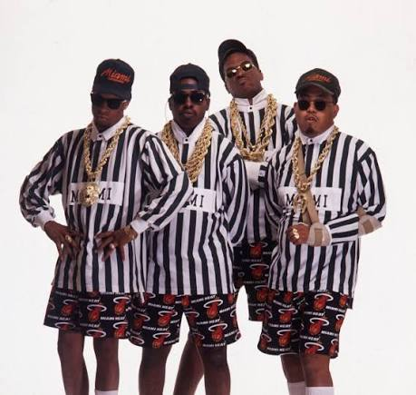
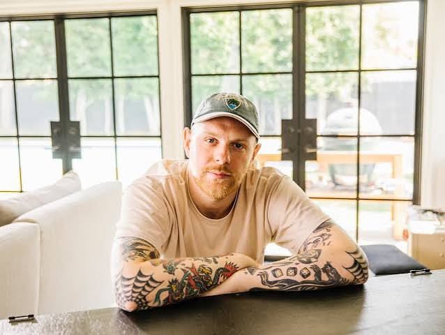
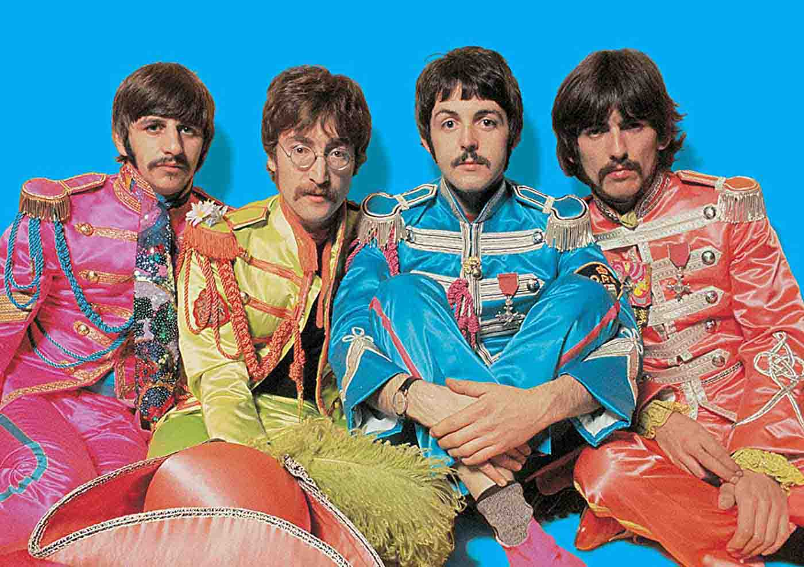
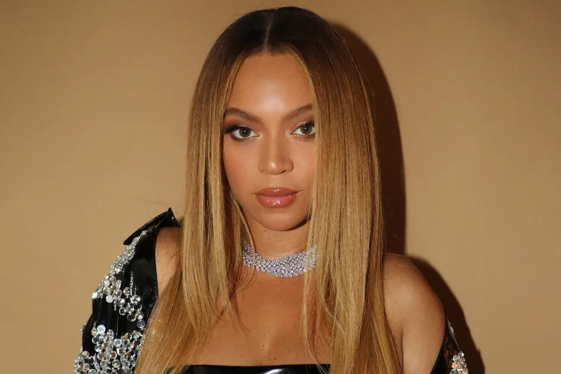
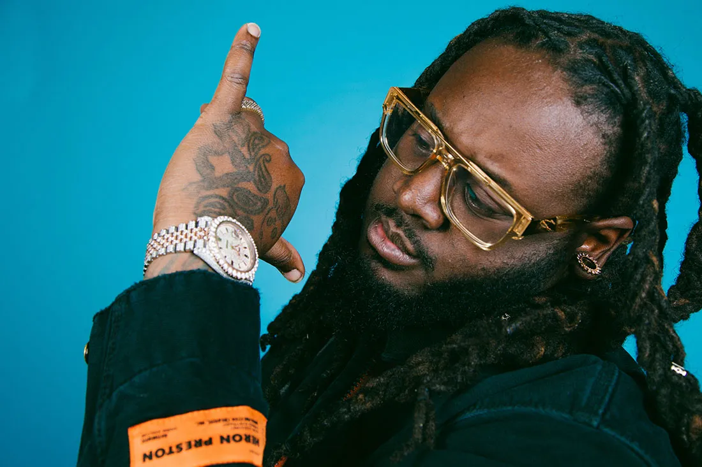
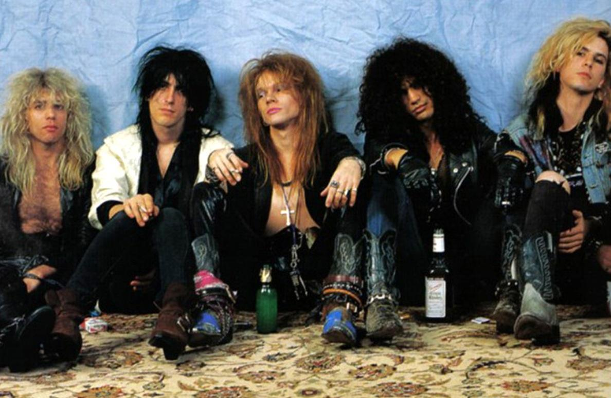

In 1990, 2 Live Crew released their first album, "As Nasty As They Want To Be". An album so provocative that it was the reason the "Parental Advisory" sticker was created.

Acclaimed DJ & Music Producer Kenny Beats has a deep musical background which includes attending the Berklee College of Music in Boston, Massachusetts.

The highest-grossing bands of all time are led by The Beatles,who generated the most revenue through unparalleled worldwide record sales of over 250 million.

Beyonce has won the most Grammy awards with a total of 35

The "T" in T-Pain's name stands for "Tallahasse" since he is a born and raised Floridan, from Tallasse.

The biggest payout for damages caused by a concert was $600,000 and it was from a pyrotechnic accident that occured during a 1992 Guns N' Roses/Metallica Stadium Tour show at the Montreal Olympic Stadium.
